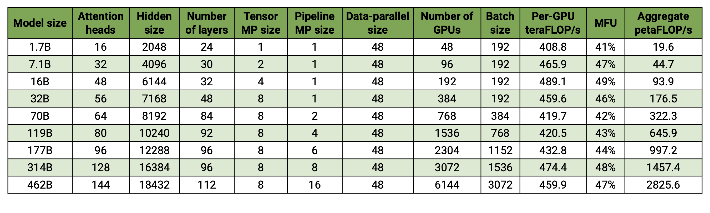
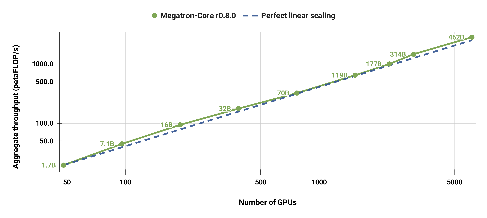

Megatron-LM 与 Megatron Core
用于大规模训练 Transformer 模型的 GPU 优化库。

快速上手
# 安装 Megatron Core 及依赖
pip install --no-build-isolation megatron-core[mlm,dev]
# 克隆示例仓库
git clone https://github.com/NVIDIA/Megatron-LM.git
cd Megatron-LM
pip install --no-build-isolation .[mlm,dev]
更多安装方式（Docker、pip dev/lts、源码安装与系统需求）请参阅 完整安装指南。
最新动态
- 新发布：Megatron Dev Branch —— 体验尚在实验阶段的新特性。
- 更新：Megatron Bridge —— 提供 Hugging Face 与 Megatron 检查点互转工具及热门模型配方。
- [2025/08] MoE Q3-Q4 2025 Roadmap —— 涵盖 DeepSeek-V3、Qwen3、高级并行策略、FP8 优化与 Blackwell 增强。
- [2025/08] GPT-OSS Model —— 正在集成 YaRN RoPE 缩放、注意力 sink、自定义激活等高级特性至 Megatron Core。
- [2025/06] Megatron MoE Model Zoo —— 汇总 DeepSeek-V3、Mixtral、Qwen3 MoE 模型的实践、性能与检查点转换。
- [2025/05] Megatron Core v0.11.0 为跨数据中心的 LLM 训练带来新能力（博客）。
历史更新可在仓库 Issues 与博客中查询。
Megatron 概览
项目结构
Megatron-LM/
├── megatron/
│ ├── core/ # Megatron Core (kernels, parallelism, building blocks)
│ │ ├── models/ # Transformer models
│ │ ├── transformer/ # Transformer building blocks
│ │ ├── tensor_parallel/ # Tensor parallelism
│ │ ├── pipeline_parallel/ # Pipeline parallelism
│ │ ├── distributed/ # Distributed training (FSDP, DDP)
│ │ ├── optimizer/ # Optimizers
│ │ ├── datasets/ # Dataset loaders
│ │ ├── inference/ # Inference engines
│ │ └── export/ # Model export (e.g. TensorRT-LLM)
│ ├── training/ # Training scripts
│ ├── inference/ # Inference server
│ ├── legacy/ # Legacy components
│ └── post_training/ # Post-training (RLHF, etc.)
├── examples/ # Ready-to-use training examples
├── tools/ # Utility tools
├── tests/ # Comprehensive test suite
└── docs/ # Documentation
Megatron-LM：参考实现
参考实现，包含 Megatron Core 以及训练模型所需的一切。
最适合：
- 在最新 NVIDIA 硬件上 进行具备前沿性能的超大规模基础模型训练
- 研究团队 探索新架构与训练技巧
- 学习分布式训练 概念与最佳实践
- 快速实验 并复现成熟的模型配置
可获得：
- 针对 GPT、LLaMA、DeepSeek、Qwen 等模型的预配置训练脚本
- 从数据准备到评估的端到端示例
- 面向研究的工具与实用组件
Megatron Core：可组合库
可组合库，提供 GPU 优化的构建模块，支持自定义训练框架。
最适合：
- 框架开发者 基于模块化、高度优化的组件进行扩展
- 研究团队 自定义训练循环、优化器或数据管线
- 机器学习工程师 构建具备容错能力的训练流水线
可获得：
- 可组合的 Transformer 基础组件（注意力、MLP 等）
- 高级并行策略（TP、PP、DP、EP、CP）
- 流水线调度与分布式优化器
- 混合精度支持（FP16、BF16、FP8）
- GPU 优化内核与内存管理
- 高性能数据加载与数据集工具
- 多种模型架构（LLaMA、Qwen、GPT、Mixtral、Mamba 等）
生态系统库
Megatron Core 所依赖的库：
- Megatron Energon 新发布 - 支持文本、图像、视频、音频的多模态数据加载器，提供分布式加载与数据集混合
- Transformer Engine - 优化算子与 FP8 混合精度支持
- Resiliency Extension (NVRx) - 带故障检测与恢复的容错训练
基于 Megatron Core 的库：
- Megatron Bridge - 训练库，提供 Hugging Face 与 Megatron 检查点双向转换、灵活训练循环与生产级配方
- NeMo RL - 可扩展的强化学习工具包，支持 RLHF、DPO 等训练后方法
- NeMo Framework - 面向企业的框架，具备云原生支持与端到端示例
- TensorRT Model Optimizer (ModelOpt) - 用于量化、剪枝、蒸馏的模型优化工具包
兼容生态： Hugging Face Accelerate、Colossal-AI、DeepSpeed
安装
Docker（推荐）
建议优先使用 PyTorch NGC Container 的上一版本，以确保与 Megatron Core 的版本与测试匹配。我们的发布始终基于前一个月的 NGC 容器，以保证兼容性与稳定性。
注意： NGC PyTorch 容器通过 PIP_CONSTRAINT 全局约束 Python 环境。以下示例会解除该变量。
此容器预装了所有兼容版本的依赖，并对 NVIDIA GPU 进行了优化配置：
- PyTorch（最新稳定版）
- CUDA、cuDNN、NCCL（最新稳定版）
- 对 NVIDIA Hopper、Ada、Blackwell GPU 的 FP8 支持
- 为获得最佳性能，推荐使用 NVIDIA Turing 及更新架构
# Launch container with mounted directories
docker run --runtime --nvidia --gpus all -it --rm \
-v /path/to/megatron:/workspace/megatron \
-v /path/to/dataset:/workspace/dataset \
-v /path/to/checkpoints:/workspace/checkpoints \
-e PIP_CONSTRAINT= \
nvcr.io/nvidia/pytorch:25.04-py3
pip 安装
Megatron Core 支持两个 NGC PyTorch 容器：
dev：紧跟上游依赖的最新版本lts：针对 NGC PyTorch 24.01 的长期支持
两个容器都可以与 mlm 配合，以便在 Megatron Core 基础上补充 Megatron-LM 的依赖。
# Install the latest release dependencies
pip install "setuptools<80.0.0,>=77.0.0" "packaging>=24.2"
pip install --no-build-isolation megatron-core[dev]
# Optional: Add Megatron-LM dependencies
pip install "setuptools<80.0.0,>=77.0.0" "packaging>=24.2"
pip install --no-build-isolation megatron-core[mlm,dev]
# Install packages for NGC PyTorch 24.01 LTS support
pip install "setuptools<80.0.0,>=77.0.0" "packaging>=24.2"
pip install --no-build-isolation megatron-core[lts]
# Optional: Add Megatron-LM dependencies
pip install "setuptools<80.0.0,>=77.0.0" "packaging>=24.2"
pip install --no-build-isolation megatron-core[mlm,lts]
若仅需包含 torch 的 Megatron Core，可执行：
系统需求
硬件需求
- FP8 支持：NVIDIA Hopper、Ada、Blackwell GPU
- 推荐：NVIDIA Turing 架构或更新产品
软件需求
- CUDA/cuDNN/NCCL：最新稳定版
- PyTorch：最新稳定版
- Transformer Engine：最新稳定版
- Python：推荐 3.12
性能基准
最新性能基准详见 NVIDIA NeMo Framework Performance Summary。
我们的代码库可在数千块 GPU 上高效训练 20 亿到 4620 亿参数的模型，在 H100 集群上实现最高 47% Model FLOP Utilization (MFU)。

基准配置：
- 词表大小：131,072 个 token
- 序列长度：4096 token
- 模型缩放：通过调整隐藏层宽度、注意力头数和层数达到目标参数规模
- 通信优化：细粒度重叠了 DP（
--overlap-grad-reduce、--overlap-param-gather）、TP（--tp-comm-overlap）与 PP（默认启用）
关键结果：
- 6144 块 H100 GPU：完成 4620 亿参数模型的基准测试
- 超线性扩展：随模型规模增大，MFU 从 41% 提升至 47%-48%
- 端到端测量：吞吐量包含数据加载、优化器步骤、通信与日志
- 可用于生产：训练流程包含检查点与容错机制
- 说明：性能结果在未训练收敛的情况下测得
弱扩展结果
弱扩展结果展示了超线性扩展（最小模型 MFU 为 41%，最大模型提升至 47%-48%），原因在于更大的 GEMM 具备更高的算术强度，执行效率更高。

强扩展结果
我们还对标准 GPT-3 模型进行了强扩展（由于词表更大，我们的版本参数略多于 1750 亿），在 96 至 4608 块 H100 GPU 上保持 1152 序列的批大小。随着规模增大，通信开销更加突出，MFU 从 47% 降至 42%。

训练
快速入门
简单训练示例
# Distributed training example (2 GPUs, mock data)
torchrun --nproc_per_node=2 examples/run_simple_mcore_train_loop.py
LLaMA-3 训练示例
数据准备
JSONL 数据格式
基础预处理
python tools/preprocess_data.py \
--input data.jsonl \
--output-prefix processed_data \
--tokenizer-type HuggingFaceTokenizer \
--tokenizer-model /path/to/tokenizer.model \
--workers 8 \
--append-eod
核心参数
--input：输入 JSON/JSONL 文件路径--output-prefix：输出二进制文件（.bin 与 .idx）的前缀--tokenizer-type：分词器类型（HuggingFaceTokenizer、GPT2BPETokenizer等）--tokenizer-model：分词器模型文件路径--workers：并行处理的工作进程数--append-eod：追加文档结束标记
并行策略
数据并行（DP）
标准数据并行
# Standard DDP: replicate model on each GPU
torchrun --nproc_per_node=8 pretrain_gpt.py \
--data-parallel-sharding-strategy no_shard
Fully Sharded Data Parallel (FSDP)
# Megatron-optimized FSDP (~15% faster than PyTorch FSDP2)
--use-custom-fsdp
# PyTorch FSDP2
--use-torch-fsdp2
# Sharding strategies
--data-parallel-sharding-strategy optim # Shard optimizer states (ZeRO-1)
--data-parallel-sharding-strategy optim_grads # Shard gradients + optimizer states (ZeRO-2)
--data-parallel-sharding-strategy optim_grads_params # Shard parameters + gradients + optimizer states (ZeRO-3)
张量并行（TP）
在多块 GPU 间拆分单层模型：
--tensor-model-parallel-size 4 # 4-way tensor parallelism
--sequence-parallel # Enable sequence parallelism (recommended with TP)
流水线并行（PP）
按模型深度拆分到不同 GPU：
--pipeline-model-parallel-size 8 # 8 pipeline stages
--virtual-pipeline-model-parallel-size 4 # Virtual pipeline to improve load balancing
上下文并行（CP）
在多块 GPU 间拆分长序列以处理长上下文：
--context-parallel-size 2 # 2-way context parallelism
--cp-comm-type p2p # Communication options: p2p, a2a, allgather, a2a+p2p
--hierarchical-context-parallel-sizes 2 4 # Hierarchical context parallelism
专家并行（EP）
面向 Mixture of Experts (MoE) 模型：
--expert-model-parallel-size 4 # 4-way expert parallelism
--num-experts 8 # 8 experts per MoE layer
--moe-grouped-gemm # Optimize expert computation
组合并行策略
并行策略选型指南
基于 NVIDIA NeMo 生产配置：
| 模型 | 参数规模 | GPU 数 | TP | PP | CP | EP | 备注 |
|---|---|---|---|---|---|---|---|
| LLaMA-3 | 8B | 8 | 1 | 1 | 2 | 1 | 使用 CP 支持 8K 序列长度 |
| LLaMA-3 | 70B | 64 | 4 | 4 | 2 | 1 | TP+PP 组合 |
| LLaMA-3.1 | 405B | 1024 | 8 | 8 | 2 | 1 | 适用于超大规模的 3D 并行 |
| GPT-3 | 175B | 128-512 | 4 | 8 | 1 | 1 | 大模型配置 |
| Mixtral | 8x7B | 64 | 1 | 4 | 1 | 8 | MoE 使用 EP |
| Mixtral | 8x22B | 256 | 4 | 4 | 8 | 8 | 大规模 MoE 的 TP+EP 组合 |
| DeepSeek-V3 | 671B | 1024 | 2 | 16 | 1 | 64 | 大型 MoE 配置 |
MoE 特殊要求
重要： 将专家并行（EP）与张量并行（TP）结合时，必须启用 序列并行（SP）。
性能优化
| 功能 | 参数 | 益处 |
|---|---|---|
| FlashAttention | --attention-backend |
提升注意力计算速度并降低内存占用 |
| FP8 训练 | --fp8-hybrid |
提升训练速度 |
| 激活重计算 | --recompute-activations |
降低内存占用 |
| 数据并行通信重叠 | --overlap-grad-reduce |
加速分布式训练 |
| 分布式优化器 | --use-distributed-optimizer |
缩短检查点时间 |
-> NVIDIA NeMo Framework Performance Tuning Guide - 深入的性能调优指南，涵盖通信重叠、内存优化与分析调试选项。
FlashAttention
FlashAttention 是高效的注意力算法。推荐默认配置，即通过 Transformer Engine 调用 cuDNN，实现前向最高 50%、反向最高 84% 的加速，并支持 FP8 内核。也可通过 --use-flash-attn 使用 flash-attn 包。
混合精度训练
--fp16 # Standard FP16
--bf16 # BFloat16 (recommended for large models)
--fp8-hybrid # FP8 training (Hopper, Ada, Blackwell GPUs)
激活检查点与重计算
# For limited memory
--recompute-activations
# For extreme memory pressure
--recompute-granularity full \
--recompute-method uniform
数据并行通信重叠
分布式优化器
路线图
及时了解最新的开发路线图与计划特性：
- MoE Q3-Q4 2025 Roadmap - 涵盖 DeepSeek-V3、Qwen3、高级并行策略、FP8 优化及 Blackwell 增强
- GPT-OSS Implementation Tracker - 集成 YaRN RoPE 缩放、注意力 sink、自定义激活函数等高级特性
更多路线图跟踪即将发布。
社区与支持
获取帮助
- 文档：Documentation - 官方文档
- 问题追踪：Issues - 提交缺陷或功能请求
贡献方式
我们非常欢迎贡献！您可以：
- 报告缺陷 - 帮助提升可靠性
- 提议新功能 - 共同塑造 Megatron Core 的未来
- 改进文档 - 让 Megatron Core 更易上手
- 提交 PR - 贡献代码改进
-> 贡献指南